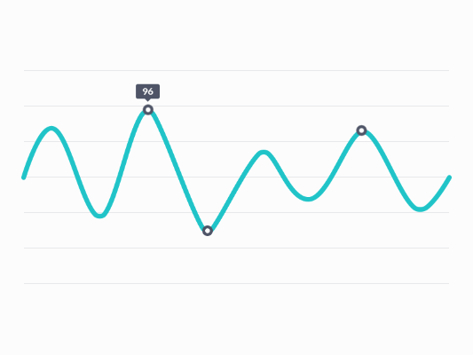

Robolog
FRC's most advanced logging, robot analysis, and troubleshooting system

Robolog makes it easier to diagnose issues with your team's robot
flash_on
Quicker troubleshooting
Robolog gets important robot metrics with the press of a button, allowing teams to easily analyze potential issues with their robot's hardware
dashboard
Cloud Centered
We designed a server system based off of CKAN and Shiny that allows the easy visualization of Robolog data. It can be deployed to any of the popular cloud systems, such as Azure or Heroku.
settings
Easy to install
We've created step by step documentation on how to install and configure Robolog, with no coding knowledge required (although some is helpful I suppose)
Robolog Web Portal
Apply for the closed alpha of Robolog's web portal here. Don't worry if you don't get accepted, it'll be opening up to the public as soon as testing is completed.
Visit the Portal